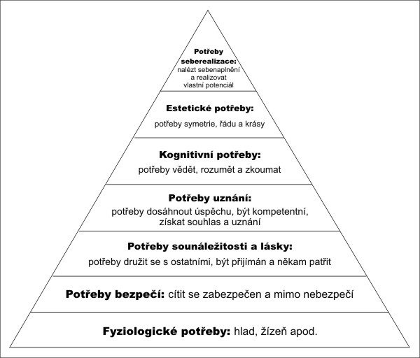

Klíčové pojmy
- Vnější činitelé motivace — motivace z vnějšku (př. slíbené peníze za jedničku na vysvědčení, atd.)
- Vnitřní činitelé motivace — pokud vzniká motivace převážně na základě poznávacích potřeb; potřeba poznávat a odhalovat stále něco nového → silný impuls pro učební postoj žáka
- MOTIVY — jsou pohnutky, které determinují směr, zaměření a obsah určité aktivity.
- POTŘEBA — výchozí stav motivace chování, jenž u člověka jako přírodní a biologické bytosti současně vyjadřuje stav nějakého nedostatku v biologickém a psychologickém bytí, který je signalizován určitým pocitem nedostatku
- Dimenze kauzálních atribucí — jsou navzájem propojené, takže například chování s kontrolovatelnou příčinou považujeme spíše za stálé, stejně tak chování s příčinou vnitřní.
MOTIVACE
- Motivaci chápeme obecně jako souhrn činitelů, které podněcují, směrují a udržují aktivitu (chování, jednání) člověka. Toto pojetí je ve shodě s definicemi mnoha autorů.
- Plháková vymezuje motivaci jako „souhrn všech intrapsychických dynamických sil neboli motivů, které zpravidla aktivizují a organizují prožívání a chování s cílem změnit existující neuspokojivou situaci nebo dosáhnout něčeho pozitivního.“ (Plháková, 2005, s. 319)
- Motivace je určována složitým systémem rozmanitých potřeb, citů, hodnotových orientací, dílčích vnějších i vnitřních motivačních momentů.
- Tento systém má u každého jedince jinou strukturu, která se u něj vyvíjí (mění se s věkem, nabýváním zkušeností, změnou postojů, cílů apod.).
- Většinou lze u určitého lidského chování a prožívání vysledovat jako příčinu kombinaci několika motivů.
- Hovoříme o tom, že lidské chování je polymotivistické.
- Motivy se také mohou postupně vytvářet (odvozovat) na základě předchozích motivů (odvozené motivy), často tvoří celé řetězce motivů.
Vnější činitelé motivace
- motivace z vnějšku (př. slíbené peníze za jedničku na vysvědčení, atd.)
- odměny a tresty
- sociální klima
- školní výkon, úspěch ve škole, známky
- vliv rodiny a sociálního prostředí
- vědomé motivování učitelem - vytváření vhodných podmínek pro výuku, navazování poznávacích potřeb, využívání různých incentivů (vnějších podnětů – události, názory…), vytváření zájmu
- nevědomé motivování učitelem – chování učitele, zaujetí pro daný předmět, vztah učitel – žák, způsob interakce s jednotlivými žáky
→ učitel může motivovat jak pozitivně, tak i negativně
druhy motivace, které má učitel k dispozici:
- interakce učitel – žák
- aktualizace vhodných potřeb
- odměny a tresty
- orientace žákovy osobnosti
Vnitřní činitelé motivace
- pokud vzniká motivace převážně na základě poznávacích potřeb; potřeba poznávat a odhalovat stále něco nového → silný impuls pro učební postoj žáka
- potřeby výkonové (vyhnutí se neúspěchu, potřeba úspěchu)
- potřeby sociální (potřeba prestiže a kladného vztahu, např. k učiteli)
- potřeby poznávací
Učební činnost žáka ve výuce může být motivována jeho:
- poznávacími potřebami → získávání nových poznatků (učení = zdroj poznání; aktualizuje a uspokojuje své poznávací potřeby jak v průběhu učební činnosti, tak i výsledkem této činnosti; motivační faktory: pobídky, odměny, tresty, přání, prosby, ..)
- sociálními potřebami → působení sociálních vztahů (dítě se rozvíjí v interakci s ostatními)
- výkonovými potřebami → vyrovnat se s obtížností úkolů, které jsou na dítě kladeny (vedou k prosazení, osamostatnění, potvrzení vlastního JÁ; motivační faktory: vyhnutí se neúspěchu, potřeba úspěšného výkonu)
MOTIVY
- jsou pohnutky, které determinují směr, zaměření a obsah určité aktivity.
- Ovlivňují intenzitu i délku jejího trvání.
- Motivy lze ve shodě s A. Plhákovou (2005) rozdělit do tří základních skupin:
- Motivy sebezáchovné – snaha o individuální přežití, přežití celého lidského druhu; jsou spojené s uspokojováním základních lidských potřeb
- Motivy stimulační – jsou spojené s uspokojováním potřeby aktivity, proměnlivé vnější stimulace; projevují se hravostí, zvídavostí, vyhledáváním neobvyklých zážitků.
- Motivy sociální – rozvíjejí se a aktivují od raného dětství v průběhu sociální interakce; jsou spojeny s uspokojováním potřeby úspěšného výkonu (výkonová motivace), potřeby afiliace (sdružování, intimity) a potřeby moci.
- Motivy vznikají většinou na základě vzájemného působení vnitřních podnětů (vnitřní psychický a somatický stav člověka, potřeby) a podnětů z vnějšího prostředí (vnější podnět, incentiva)
- Kombinace vnějších a vnitřních motivů i výskyt odvozených motivů, se projevuje i v případě motivace k učební činnosti.
POTŘEBA
= výchozí stav motivace chování, jenž u člověka jako přírodní a biologické bytosti současně vyjadřuje stav nějakého nedostatku v biologickém a psychologickém bytí, který je signalizován určitým pocitem nedostatku
VNITŘNÍ A VNĚJŠÍ MOTIVACE
Vnitřní (intrinsická) motivace
- vychází z vnitřních pohnutek, jejím základem je systém potřeb a zájmů jedince.
- Vnitřní motivy (potřeba poznávací, potřeba činnosti, společenského styku, seberealizace aj.) jsou přímo spojeny s příslušnou činností nebo učivem.
Vnější motivace (extrinsická)
- je dána působením incentiv, tj. vnějších podnětů, jevů a událostí, které jsou s danou činností žáka spojeny nepřímo, ale mají zpravidla schopnost aktualizovat některou z vnitřních potřeb člověka.
MOTIVACE K UČEBNÍMU VÝKONU
- Motivace k učení = jedná se o složitou motivaci, působí v ní větší počet rozmanitých potřeb, citů, hodnotových orientací, dílčích motivačních momentů, a to v kombinacích, které jsou odlišené interindividuálně (při srovnání různých jednotlivců) a také intraindividuálně (při srovnání různých období v půrběhu života téhož jednotlivce).
- Vnitřní motivace k učení – dílčí motivy spjaté přímo s příslušným předmětem nebo činností, které se žák učí žák přijal cíl za svůj, má k němu emoční vztah a přijímá učení jako nezbytnou podmínku k dosažení cíle
- Poznávací potřeba, zvídavost
- Potřeba činnosti, funkční libost ( radost ze samotného vykonávání činnosti)
- Uspokojení z toho, že jsem se něčemu naučil, že jsem si osvojil dovednost, že jsem zvýšil svou kompetenci
- Uspokojení ze společné činnosti, ze sociální komunikace a interakce při učení
- Vnější motivace k učení – momenty, které jsou spjaty s příslušnou učební činností a jejím předmětem jen zprostředkovaně vnější motivace nestačí k dosažení dlouhodobých výsledků v učení a ke zformování zralé osobnosti
- Odměna
- Pochvala
- Prestiž
- Trest
- Donucení (Čáp, 1997).
- Motivace ve škole silně ovlivňuje školní úspěšnost žáků, jejich výkony, ale i rozvoj žákovské osobnosti.
- Motivace je jednou z podmínek efektivního učení, ovlivňuje koncentraci, paměťové pochody, výdrž u učení, rychlost a hloubku učení.
- Na motivaci záleží, zda bude žák využívat či nevyužívat svého schopnostního potenciálu, a tím i bude-li své schopnosti dále rozvíjet.
- Práce s motivací je jedním z nejnáročnějších úkolů učitele.
- Nedostatek motivace či problémy s motivací musí učitelé řešit velmi často.
Dle dlouhodobého výzkumu I. Pavelkové lze motivaci ve škole rozdělit na šest motivací, které jsou dány pohnutkami, které jsou rozepsány níže.
- Poznávací motivaci
- Rád poznává nové věci
- Chce toho hodně vědět
- Chce hodně věcem přijít na kloub
- Zájem o předmět
- Zajímavosti vyučování
- Z nudy a nedostatku jiných zájmů
2.Výkonovou motivaci potřeba úspěšného výkonu
- Dobrý pocit, když se něco dobře naučí
- Dělá mu radost dosahovat výborných výsledků
- Pocit úspěchu
- Školní úkoly bere jako výzvu
3.Výkonová motivace - vyhnutí se neúspěchu
- Obava, že nebude nic umět
- Strach aby nevypadal hloupě
- Obava ze špatné známky
- Strach před rodiči
4.Sociální motivace – prestiž
- Být lepší než někteří spolužáci
- Rád se předvedu druhým lidem
- Zvýšení prestiže
5.Morální motivace – povinnost
- Učení je povinnost
6.Instrumentální motivace – motivace perspektivními cíli
- Dostat se na určitou školu
- Aby získal lepší zaměstnání
ZÁKLADNÍ TYPY POTŘEB
Maslowova teorie morivace (Fontana, 1997, s. 214-215)
- A. H. Maslow popsal model motivace
- Model má podobu hiearchie postupující od osobních potřeb na základně k rozumovým na vrcholu

- existují dvě velké skupiny potřeb: biologické a společenské
- Průběh:
- POTŘEBA (hlad) – určitý impuls,
- APETENCE – k dosažení cíle, potravy
- INCENTIVA, pobídka, hodnoty více objektů, např. poživatelnost
- Z Maslowowa modelu vyplývá, že osobní potřeby, umístěné v hierarchii níže (fyziologické potřeby a potřeby souvisící s bezpečím a zajištěností) jsou největší měrou vrozené, zatímco společenské, rozumové a další vyšší potřeby obsahují vrozené činitele stále více propojené s naučenými odezvami.
- Maslow se domnívá, že čtyřem vyšším úrovním hierarchie se budeme věnovat v okamžiku, kdy budou uspokojeny nižší úrovně fyziologických a sociálních potřeb.
- Maslowowa hierarchie říká, že pokud jednotlivci uspokojí své fyziologické potřeby a svou potřebu bezpečí před útočníky, pak jim jde hlavně o to, aby byli přijímáni svými rodinami a společenskou skupinou (sociální potřeby).
- Jsou- li tyto potřeby uspokojeny, postoupí k poznávacím a estetickým potřebám a nakonec pak sebeuskutečńování.
- Sebeuskutečňování znamená, že se u jednotlivců vytvářejí vlastnosti příznačné pro zralé a dobře přizpůsobené lidi.
Znaky seberealizovaných lidí:
- Vnímají dobře skutečnost a snášejí nejistotu
- Přijímají sebe a jiné lidi takové, jací jsou
- Jsou spontánní v myšlení a chování
- Zaměřují se více na problém něž na sebe
- Mají dobrý smysl pro humor
- Jsou vysoce tvořiví
- Odolávají společenským tlakům, nicméně nejsou úmyslně nekonvenční
- Záleží jim na prospěchu lidstva
- Vysoko si cení základních životních prožitků
- Mají hluboce uspokojující mezilidské vztahy
- Pohlížejí na život objektivně
KAUZÁLNÍ ATRIBUCE (Nakonečný, 2015, s. 419,443)
= připisování příčin vlastním úspěchům a neúspěchům, které mají vliv na další vývoj motivace výkonu
- připisování úspěchů a neúspěchů sobě samému nebo vnějším okolnostem
- interní kauzalita = jedinec příčinu připisuje sám sobě
- externí kauzalita = jedinec příčinu připisuje vnějším okolnostem, osobám
- kauzální atribucí si lidé vysvětlují příčiny svých úspěchů a selhání, což má vliv na následné aspirace a úroveň sebedůvěry (sebevědomí)
- interní pozitivní atribuce = vyvolávají sebevědomí a pocit hrdosti,
- stabilní pozitivní atribuce kauzality = vyvolávají důvěru
- negativní atribuce = vyvolávají pocit bezmocnosti
- externí pozitivní = vyvolávají vděčnost
- externí negativní = vyvolávají hněv nebo pocit smůly
- úroveň aspirace = míra nároků, kterou si jedinec klade na sebe sama a která je ovlivňována životními úspěchy a neúspěchy a propojena s úrovní sebevědomí, respektive sebedůvěry
- Kauzální atribuce (Vágnerová, 2005) je skol k vysvětlování jakéhokoli jednání předem daným způsobem
- Projevem potřeby dosáhnout jistoty v porozumění problému, k níž zjednodušující, zdánlivě jasné hodnocení přispívá
- Učitele si neuvědomují, že posuzují děti jednoduše nejsou schopni připustit, že jde o jejich subjektivní názor a jsou přesvědčeni o pravdivosti svých závěrů
- Učitelé mají tendenci hodnotit dětské projevy stabilním způsobem = vytváří si osobní atribuční styl
- Hodnocení učitele a postoj ke konkrétnímu žákovi postupně nabývá určité podoby, která se těžko mění stává se stereotypem, který bývá odolný, rigidní ke změně proces LABELING, tj. značkování žáků
- Učitel rozlišuje žáky výborné, přijatelné a problematické
- Na základě dosažených výsledků a míry nápadnosti svého chování, ale i s ohledem na předpokládané schopnosti a osobnostní vlastnosti je dítě zařazeno do předem daných kategorií získá určitou pozici a s ní související roli
Některé atribuce mají účinek inhibiční, demoralizující, frustrující, stresový, účinek jiných atribucí je aktivizující, facilitační a podporující.
U kauzálních atribucí můžeme rozeznávat řadu dimenzí:
- Podle umístění příčiny
- vnitřní (dispoziční) – vycházející z vnitřních charakteristik jedince, osobnostní (nálada, nedostatek schopností, nízká motivace)
- vnější (situační) – vycházející ze situace (špatné pracovní podmínky, nesrozumitelně zadaný úkol, apod.).
- Podle stability příčiny
- Stálé – předvídatelné chování či výkon
- Nestálé – náhodné, nepředvídatelné chování či výkon
- Podle délky trvání
- dlouhodobé (nedostatek schopností, vzájemné nesympatie s nadřízeným)
- nebo krátkodobé, proměnlivé (zdravotní indispozice, náhlý výpadek výpočetní techniky)
- Kontrolovatelnost příčiny
- kontrolovatelné – jedinec ji může regulovat
- nekontrolovatelné – příčina se vymyká možnosti regulace
Dimenze kauzálních atribucí
- jsou navzájem propojené, takže například chování s kontrolovatelnou příčinou považujeme spíše za stálé, stejně tak chování s příčinou vnitřní.
- Nejčastěji jde o tzv. „základní atribuční omyl“.
- Vnitřní příčiny chování považujeme za stálé
- vnější příčiny za nestálé a náhodné, přičemž nadhodnocujeme vnitřní (stálé) příčiny a podhodnocujeme vnější (nahodilé). Uplatňuje se to především v posuzování příčin chování druhých lidí.
- Pokud posuzujeme své vlastní chování, dochází k odlišnému hodnocení - své vlastní chování, které je úspěšné připisujeme stálým příčinám, naopak svůj neúspěch máme tendenci připisovat vnějším příčinám. Hraje zde také roli to, že o příčinách vlastního chování máme více informací a zpravidla jsme vůči sobě shovívavější.
- Připisování příčin chování má také význam pro sebehodnocení jedince. Pokud je dítě během vývoje svým okolím přesvědčováno, že jeho neúspěchy jsou způsobeny neschopností, je vysoce pravděpodobné, že výsledkem bude malá sebedůvěra a negativní sebepojetí.
- Existují jedinci se šťastným, ofenzivním atribučním (přesněji řečeno autoatribučním) stylem, kteří připisují svůj úspěch osobním činitelům - dobrým schopnostem a přiměřenému úsilí, zatímco neúspěch příčinám proměnlivým - smůle nebo nedostatku úsilí. Tito lidé mají pocit, že úspěch je v jejich moci.
- Naopak lidé s nešťastným, defenzivním atribučním stylem připisují své úspěchy situačním faktorům (výjimečné štěstí, jednoduchost úkolu), kdežto neúspěchy připisují činitelům dlouhodobým (nedostatku schopností či intelektu). Jejich neúspěch je někdy vede k rezignaci, k potvrzení fatálnosti vlastní nedostačivosti, protože nemají pocit, že by svou úspěšnost mohli nějak kladně ovlivnit (naučená bezmocnost).
- Tyto autoatribuční styly významně korelují se sebevědomím, s výkonem i se vztahem k pracovní instituci nebo ke škole. U dětí mohou ovlivnit i jejich budoucí vztah k povolání.
- Autoatribuční styly jsou produktem socializace - často je přejímáme v dětství z komentářů našich rodičů a učitelů.
- V menší míře jsme podobně ovlivňováni i později v životě (například určitým studijním zaměřením).
Roli v tom, zda chování druhých připisujeme spíše situační, anebo osobnostní příčiny, hrají také další okolnosti:
- Má-li určitá činnost důsledky i pro nás osobně (relevantní hédonismus, personalismus), máme tendenci považovat jednání dotyčného za záměrné (příklad: Zklamaní lidé mají tendenci najít někoho, koho by mohli z frustrace obvinit. Pokud toto zklamání souvisí s něčí činností, bývá tento člověk zpravidla obviněn ze schválnosti).
- Roli hraje i společenská žádoucnost: pokud se někdo chová v rozporu s tím, co lidé běžně schvalují a oč usilují, většinou ho nepodezíráme, že tak činí schválně